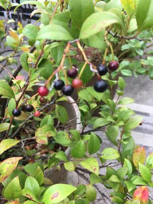
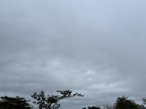
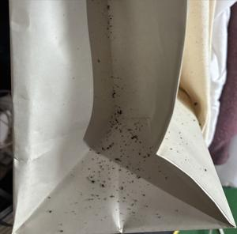
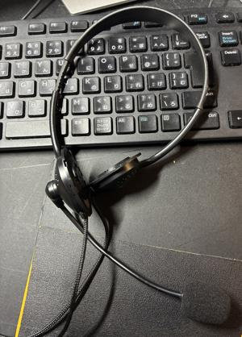

うるがいの話 ある日
最新: 大動脈解離（だいどうみゃくかいり）【うるがいの話 ある日】とは 一日だけのプログです
『うるがいの話』の最新一日だけのプログで、通信料が少なく経済的だ。カニの画像をクリックすると全ての日付が載る『うるがいの話』サイトを表示します
|
|
【うるがいの話】 うるがい(ｳﾙｶﾞｲ urugai)とは、『もずくがに』の名前でとても大きくなります。 |
|---|---|
|
|
【カミマヤーの話】 猫のことを方言でマヤーといいます。カミマヤー（kamimayaa）とは、神の猫のことです。 |
|
【たながぁの音楽】 たながぁ（ﾀﾅｶﾞｰ tanagaa）とは手長えびのことで、何種類かあり大きいのは車 エビぐらいになります。 |

|
【ぶながぁの話】 ぶながぁ(ﾌﾞﾅｶﾞｰ bunagaa)とは、赤い髪の毛、赤い身体、そして身長は１ｍ２０ｃｍ ぐらい、川の蟹を食べているの目撃された。場所は沖縄県国頭郡大宜味村のと ある村僕の隣近所に住んでいる爺さんから、聞いた話です。 |
|
 |
【ギーマの話】 ギーマ(giima)とは、山原の里山に咲くスズランに似た、 花を付けます。実は食べられます、 気が付くと口の周りが紫になっています。 |
2026年11月28日 (土）大動脈解離（だいどうみゃくかいり）
14:49

椅子の後ろに、おとといからスポンジみたいな汚れたものが落
ちている。ん！、なに？、で次の日も。ポールハンガーにかけ
ている手提げ袋にも、黒いゴミが・・・。

上をたどっていくとヘッドフォンがある、そして崩れおちそう
なヘッドフォンのカバーがあった。オ、師匠からもらったヘッ
ドフォン、３年前には名古屋の仕事でグループウエア「Ｔｅａ
ｍｗａｒｅ」で使っていたのに。ま、もう使わないと思うが。
もったいないのでヘッドフォンカバーだけと購入することにす
る（以前も同じ経験がある）。

ヨメの７０歳を超えると従兄弟が、大動脈解離で手術、集中治
療室にいるとヨメのお母さんの妹の叔母さん（９２）から連絡
があった。従兄弟は、叔母さんの病院や買い物など面倒をみて
いたのだが。これで、叔母さんの病院への面倒はヨメが代替す
ることに（必然的に巻き込まれる）。男性は７０歳を超えると
ね。